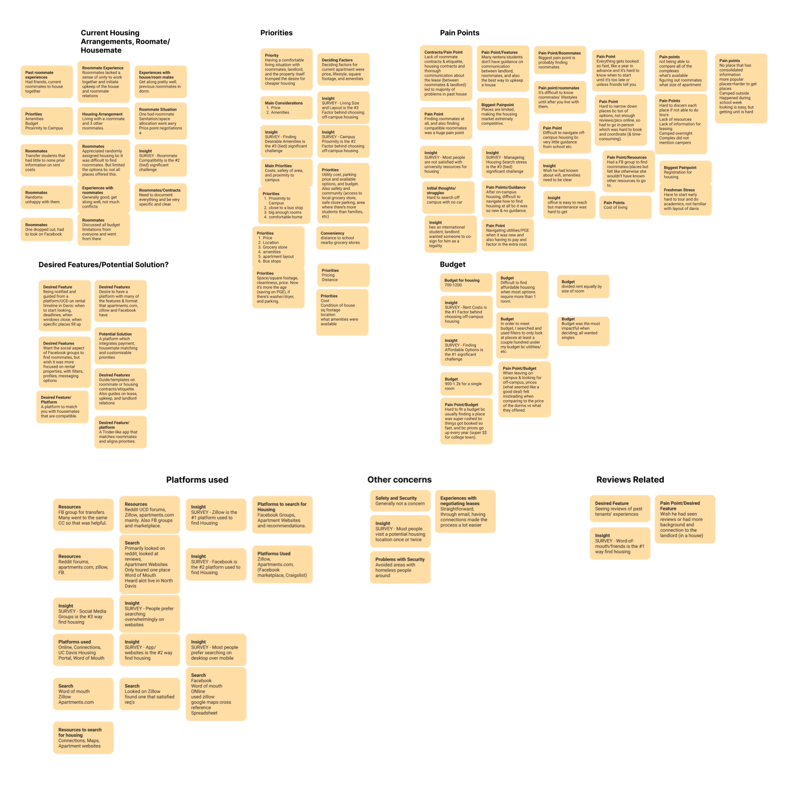
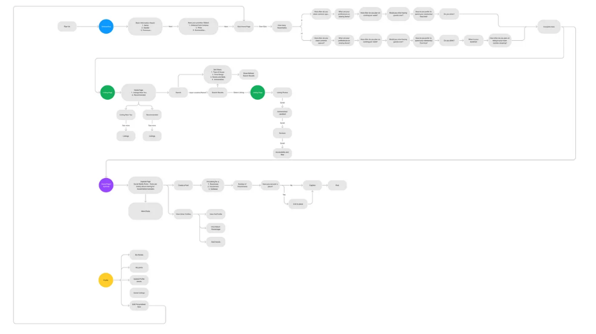
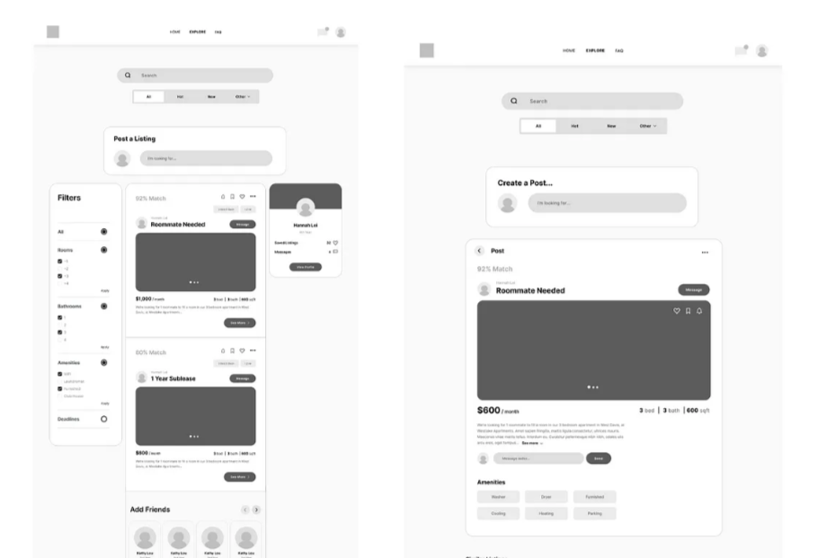
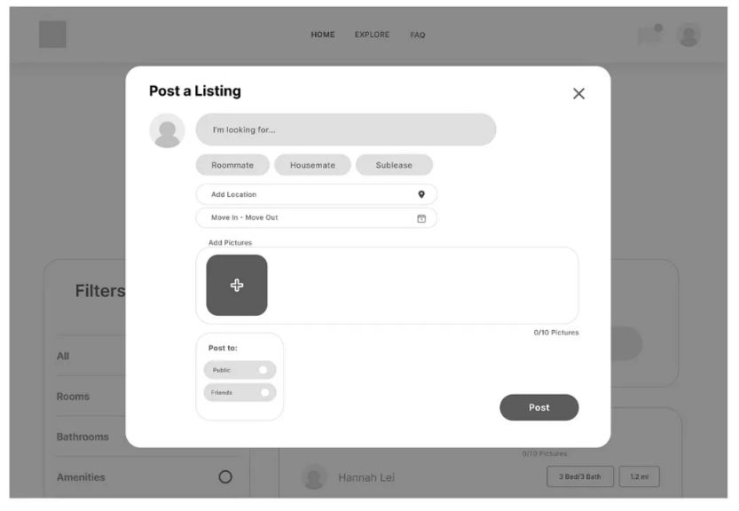
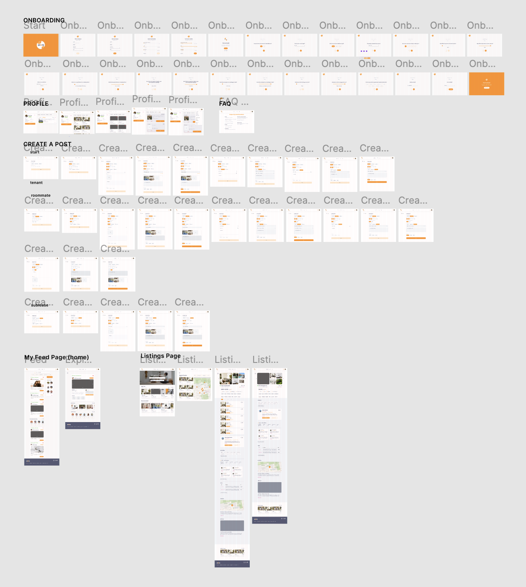
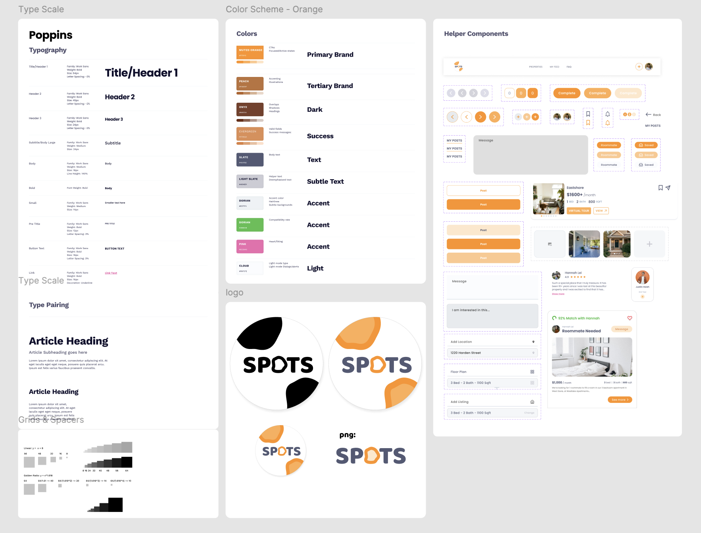

This mobile site is under construction. Please view on a desktop for the full experience.
Spots - Design Interactive
Role
Associate Designer
Sprint Lead: Synthesis and Ideation, Mid-fi and User Testing
6 weeks
UX/UI
Tools
Figma
Notion
Goodnotes
Team
Hannah Lei
Hubert Lee
Raymond Wong
PM: Alyannah Erika
Impact:
Spots aims to reduce the stress and complexity of finding housing, making the process more manageable and cost-effective for students.
A user-friendly housing app that streamlines the search for off-campus rentals while integrating social networking features. This compact platform allows you to connect with potential roommates, explore vetted properties, and directly communicate with landlords. It simplifies the housing hunt with a personalized matching quiz for roommates and properties.
Onboarding
Our onboarding process is designed to create a personalized user experience right from the start. It begins with a brief introduction to Spots, followed by a compatibility quiz. This quiz asks about lifestyle choices, sharing preferences, and housing needs, helping us match users with ideal roommates and properties. By gathering these details early on, we ensure that users see housing options that best fit their specific requirements.
My Feed
In the final MyFeed page, users can seamlessly explore posts from fellow students, complete with photos and property details. The compatibility percentage helps users find ideal roommates or properties, and the messaging feature allows direct communication. Users are able to favorite posts to be viewed later in their Profile. Users can also create their posts and access linked listings, creating a vibrant and interactive community hub for housing searches.
Properties
The Properties page allows users to effortlessly browse housing listings, both houses and apartments. With a map-based search, users can explore available properties and click into each one to access detailed information. This includes past tenant/student reviews, apartment amenities, various pricing options, additional fees, and location details such as proximity to campus. Users can also contact landlords for houses, view upcoming deadlines and openings, and save listings for easy reference, providing a comprehensive and user-centric housing search experience.
Profile
Navigating to the Profile page, users can easily access their personal information from onboarding, allowing them to review and update their preferences. They can upload a profile picture for a personalized touch. Users can also retake the compatibility quiz to refine their roommate and property matches. Additionally, this section offers a consolidated view of saved listings, favorited posts, and drafted and posted content, providing a one-stop destination for managing their housing search activity and profile details.
Create a Post
Finally, on the Create a Post page, users have a dynamic form that adapts based on their preferences. Whether they have a property to offer or are looking for one, want roommates or tenants, or specify the type of property, the form guides them accordingly. Users can fill in property details, choose their posting audience (friends, public), and even save drafts for later. This versatile tool streamlines the process of sharing housing needs and preferences, catering to a wide range of user scenarios.
Key Achievements:
Operational Efficiency
Streamlining and automating the process of finding housing, reducing the time and effort required by users. With data from onboarding quizzes to create personalized feeds that suggest potential matches based on preferences, compatibility, and other criteria.
Awarded: Most Customer Centric UX
Judges, industry professionals, expressed that they would personally utilize the website for college housing needs, affirming the platform’s practicality and appeal for the intended audience. Overall, the feedback underscored the project’s success in merging innovation, functionality, and aesthetic design in Spots.
Community Building
User Forums and Groups: Creating forums or groups within the app to foster a sense of community and allow users to share experiences and tips.
Methodologies:
Initial Research
We conducted a total of 52 focused survey, with undergraduate students, using Google Forms to gather student insights on off-campus housing searches. Our survey, featuring multiple choice, Likert scale, and open-ended questions, aimed to pinpoint key factors in housing and roommate selection. As well as gauged the frequency of property visits and use of mobile apps vs desktop applications in the housing search process.
80%
Pricing
Participants mentioned affordability as a major challenge in housing.
73%
Proximity
Surveyors stated proximity to campus as a deciding factor.
90%
Application Type
Surveyors preferred using desktop websites for housing searches.
40%
Word of Mouth
Surveyors stated they find housing opportunities through word of mouth.
Competitive Analysis
We looked at applications Zillow, Apartments.com and Airbnb. We then conducted a competitive analysis by comparing and contrasting different features these apps had and decided to integrate them into our project based on how useful and viable they were in our project needs.
We found key strengths:
User-Intuitive Layout: The majority of housing apps have an intuitive and easy-to-use interface.
Comprehensive Information: Listings generally provide detailed specifics on accommodations, restrictions, etc.
As well as key weaknesses:
Missing Leasing Dates: Many apps lack crucial information about leasing dates.
Limited Communication Tools: There’s an absence of platforms for potential roommates/housemates to communicate directly.
And opportunities for improvement:
FAQ Integration: An FAQ page could be added to answer common questions students have during their housing search.
How might we create an online platform that connects students with verified housing options, provides rental guidance, and facilitates informed housing decisions?
Qualitative Data
Pricing and accessibility were most important when looking for housing.
Students compared distance vs price, as well as housing quality and management administration when it came to housing.
Most students relayed the difficulties they had with finding new roommates.
Most stayed with friends made their 1st year or housed with friends from high school.
Some mentioned online platforms such as Facebook, where they searched for housemates through groups but were “not very lucky”.
When we asked them about the application process, students revealed struggles with transparency when signing applications and leases, and emphasized a disregard for first-come-first-serve or raffle-style leasing.
Affinity Mapping
Our interview findings led us to determine which paint points we would address in our design and application. From here we found our focus in pricing, sociability, accessibility, comparability, transparency, and creating a resource hub. and began to synthesize potential features.

User Persona
Name: Ashely A.
Demographics:
Female
Incoming Freshman or Transfer
Transportation: Car
Goals and Challenges:
adjusting to living without parents
1-3 housmates
Values:
Student community
Spacious and clean areas
Affordable housing
Fears:
Housing time cycle and planning
Incompatible roommates
Misleading or confusing contracts
Our Goals
Streamline Housing Search: Make finding roommates and rentals easy and efficient.
Offer Vetted Listings: Provide safe, reliable housing options.
Personalize Matches: Use quizzes for tailored roommate and property connections.
Empower with Information: Give students essential renting guidance in a simple format.
User Flows
This included our main tasks:
Onboarding (blue)
Listing page (green)
Feed (purple)
Profile page (yellow)

Mid-Fi Frames
Slide 1
Home Page: The left side features a variety of property listings, complemented by a detailed example on the right.

Slide 2
Explore Page: The left side features a social hub for community interaction, while the right side provides a detailed post.

Slide 3
Provides options to create your own post, such as roommate/housemate searches or sublease listings.
User Testing
We conducted user testing on our mid-fidelity prototype with 5 participants and found these to be the most apparent pain points:
1. Setup was confusing for users. Originally, our “Home” page was set up like traditional property listing sites, featuring official housing properties. The secondary “Explore” page focused on social media, where users could post and connect with potential roommates.
Solution:
“Home” page to “Properties.”
“Explore” page to “MyFeed”
2. The users expressed a desire for us to highlight the social media aspects because it serves as a focal point for fostering interactions within communities. They see it as a valuable tool for enhancing engagement and connectivity among users.
Solution:
“MyFeed” was repositioned as the primary page
Users also found the “Post a Listing” on the “Explore” page confusing and obstructive
3. Users also found the “Post a Listing” feature on the “Explore” page confusing and obstructive, particularly due to confusion regarding their placement.
Solution:
Moved elements upwards and removed the Post a Listing widget to improve user experience and enhance platform clarity.
These changes placed our platform’s distinctive social networking feature at the forefront. This adjustment better aligned with our objective of highlighting the unique social interactions our platform offers, reflecting key, actionable insights from user feedback.
Hi-Fi Frame View

Design Standards
Our design system incorporates orange for its energetic and inviting qualities, adding vibrancy and visibility. Brown brings stability, warmth, and a connection to nature. Together with green and light blue, our palette creates a harmonious and inviting design that aligns with our user-centric approach.

Conclusions
Initially, we faced challenges in formulating key questions to understand our users’ primary frustrations and motivations in housing searches. This crucial step guided us in prioritizing and developing features that addressed these pain points. During user testing, we realized the need to better communicate these frustrations through our feature design to enhance functionality. As we finalized our product features, it became crucial to seamlessly integrate them, ensuring a fluid user experience across the three pages. Despite our ambition to include numerous features, time constraints needed us to focus on the most impactful ones for our high-fidelity prototypes.
Next Steps
Based on the feedback we received, moving forward we should work more on bringing together and integrating each others design styles. Other implementations we may work on in the future are:
Responsive Design — Working on a mobile app as our current design utilizes a desktop design only, bringing on-the-go convenience to our college demographic.
Micro-interactions — Using subtle animations to enhance user experiences and make the interface more engaging.
Research — Gaining a better understanding of what design trends are being used in other housing or roommate applications.